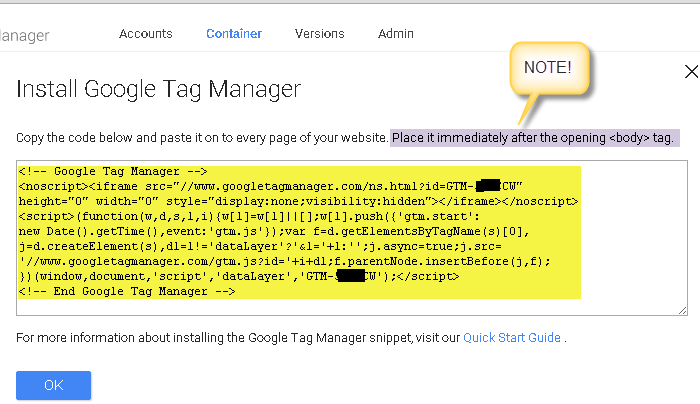
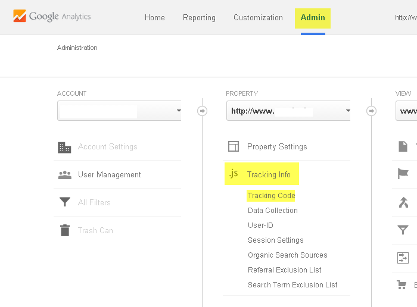
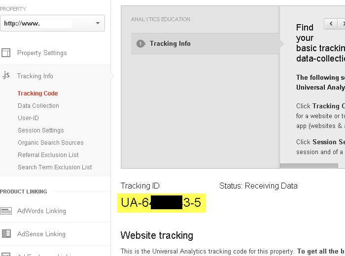

gtm2-youtube-event-tracking
YouTube Event Tracking in Google Analytics for non-developers
Project maintained by grantmarch Hosted on GitHub Pages — Theme by mattgraham
Target Audience
This tutorial is primarily aimed at non developers and describes how the code can be used in Google Tag Manager to generate YouTube events for Google Analytics (GA). A developer is required, however, to enable pages for Google Tag Manager (GTM). This can be done instead of enabling pages for GA. Developer details are included for completeness.
Goal
Here is a 1:10 minute video showing the goal of being able log YouTube events, eg. play, pause, in Google Analytics.
Overview
Google Analytics
A small bit of Javascript can be placed on a page to allow Google Analytics (GA) (www.google.ie/analytics) to track the page. We will only be using the Tracking Id from this code here.
Google Tag Manager
Google have created Google Tag Manager (GTM) (www.google.com/tagmanager) as an accompaniment to GA which allows non developers to be better able control what GA monitors without having to continuously request assistance from a developer. A small piece of Javascript code must be added to each page using GTM just as you would do for Google Analytics.
This tutorial specifically focuses on monitoring the YouTube video events ENDED, PLAYING, PAUSED, BUFFERING, CUED. But it is obviously possible to monitor other non YouTube events too, for example it is possible to monitor clicks on tabs on a page that load ajax content onto the same page.
Custom Javascript
In addition to the GTM code above, a non-developer can add some custom code (by just cutting and pasting) that enables the page to "listen" for YouTube events. This code then passes the events to a concept called the "data layer". GTM manager can "read" these events in the data layer and, in turn, pass them on to GA to monitor. This code has been tested with Chrome. Please report how it works for other browsers - some changes may be necessary.
Google Developer's Console
We will also use the Google Developer's Console (console.developers.google.com). This is not required for our event tracking as Youtube videos are tracked by their video id, eg. https://www.youtube.com/watch?v=_AhXOcM8Liw. If you click the Youtube link, you'll see that the title of this video is "Cliffs of Moher".
We can use some of Google's Youtube Data API v3 to get the title corresponding to this video id. This means that the resulting events can be recorded in GA using the more meaningful title as opposed to the obscure video id. For security and monitoring purposes we have to request access to Google's APIs and we do this using the Google Developer's Console. This is the main functionality I've added here to code by Lunametrics (@lunametrics)
Developer vs non developer
If a Youtube video is to be embedded on a page, the web developer will be doing that anyway. The GTM code has to be put on pages to monitor events (and more) instead of the GA code. After that, a non developer has considerable scope to set up events in GTM for GA to monitor.
Developer Required Tasks
Finding Embed Code for YouTube Video
Looking at the previous Youtube video of the Cliffs of Moher, click Share > Embed and cut and paste the provided code into your web page.

Web Page with Two Embedded YouTube Videos

Enable GTM on this Page
We need to get the GTM code to put on the web page. It is suggested developers should do this as a matter of course - just as they would have done for the GA code fragment they will have used before
Create GTM Account and a Container
Login to www.google.ie/tagmanager and create an account. A container is used to hold one website domain that you are managing.

Add GTM Javascript Code to your Web Page
You will be directed to the GTM Javascript snippet that has to be added to your web page.
Your web page should now look something like this

The GTM Dashboard
The GTM should be displaying its dashboard. Note that you are "in" the Container tab and you have the container you defined earlier, namely - www.<somewebsite>.com.
Finding your GTM Code Snippet Again
If you need to find the GTM code again, to add to a different page for example, go to Admin > Install Google Tag Manager. This doesn't actually "install" anything - it just shows you the GTM Javascript code again.
Non Developer Tasks
GTM Dashboard Again
In GTM we will primarily use 3 concepts - Variables, Triggers and Tags.
Consider Variables to be containers that can hold a value. Triggers send out a message that other parts of GTM can act upon. Tags (nothing to do with HTML tags) are units that carry out specific functionality. This will become more clear as this example is developed.
Non Developer Task Summary
At this stage, our developers should have set up the page with YouTube videos to be able to "talk" to GTM. Now a non-developer can decide which pages should be monitored for YouTube events. This is a summary of the process involved.
- Get YouTube API key
- Create a variable in GTM, YouTubeApiKeyVar, to hold our api key for the YouTube Data v3 api. This variable is used by our custom Javascript which we will add later. This allows our Javascript to use the YouTube Data API v3 to get the video titles corresponding to video ids.
- Get GA Tracking Id
- Create a variable, GATrackingIdVar, which holds the Google Analytics Tracking Id which is got from our GA account. This allows GTM to send event data to GA. Although we've "enabled" GTM in our web page, we still need to send events from our web page to GTM (which then sends them on to GA). These events are generated by some custom Javascript that a non-developer can "insert" into our page using GTM.
- "Insert" our own Javascript YouTube event tracking code (in a GTM tag which I will call GAYouTubeJSTag ) to monitor all the YouTube videos on the page. When the custom Javascript "hears" an event, it sends a message to (what is called) the Data Layer. The message for the video playing looks like this... { 'event': 'youtube-event', 'action': 'video-playing', 'label': 'none' } ... GTM has access to the Data Layer and can "see" these 3 items that make up an event. To make them usable in GTM we have to "reference" them with a GTM variable.
- Checking your GTM set up so far
- We will create a Trigger, YouTubeEventTrig, that is fired when a youtube-event occurs.
- We will create a Variable, YouTubeActionVar, that reads the data layer and gets the action
- We will create a Variable, called YouTubeLabelVar, that reads the data layer and gets the label.
- Now that everything is set up, we can create a tag, YouTubeTag, that glues all these elements together and sends the event info off to GA where the events can be analysed in real time and also collated over time.
- Remember to PUBLISH your changes.
Get YouTube API Key
Go to console.developers.google.com and Create Project. Now we can use some of the many Google APIs that are available to control and manipulate Google Products. In our case, we just want to use the YouTube Data API v3. Click on APIs and Auth > APIs and enter YouTube in search box and click on YouTube Data API v3.
In the resulting screen click "Enable API" (not shown here). Before we can use the YouTube Data API v3 we have to generate some credentials to allow us access to the API.
Google allows 2 kinds of access. If you are just requesting read only access to public data then you only require Public API Access. This is what we will be using. The titles and video id for any YouTube video are in the public domain. Otherwise Google's implementation of OAuth can be used to get permission from the user before accessing their private data.
But even with Public API Access, you might be wondering why Google goes to all this bother for us to access data that is in the public domain. One reason, I'm sure there are others, is that every user of Google's APIs is subject to a certain limit on the number of accesses that can be made to an API over a particular course of time.
Now we can create the API key which our Javascript code can use to allow us access to the YouTube Data API v3. Click Create new Key.
We are then asked what websites we should allow to use our API key. Enter your website in the following form... *.somewebsite.com

Now make a note of your API key. We can always come back to the Google Developers Console if we need to look it up at a later stage.
We are now ready to start working with GTM.
Create YouTubeApiKeyVar
Click Variables. There are a number of pre-defined variables that you can enable/disable. Just use the default settings for all of these. But we want to create new User-Defined variable for our api key for YouTube Data Api v3.
Give your variable a name, here I've used YouTubeApiKeyVar. Our Api key is not going to change, so we will use the Constant variable type. Click Continue.
Now cut and paste in your api key from the Google Developer's Console and Create the variable.
Get GA Tracking Id
To be able to monitor our events with GA we have to connect GTM with GA using our GA tracking id. We will do this later. In the meantime to make things easy for us, go ahead and create another constant variable called GATrackingIdVar. Now we won't have to go routing around GA for this id whenever we need to use it in GTM.
To remind you, here's how we access the tracking number in GA. Open www.google.ie/analytics in your browser. Admin > Tracking Info > Tracking Code
 Create GATrackingIdVar
You should now have 2 User-Defined variables.
"Insert" YouTube Tracking Javascript Using GAYouTubeJSTag
Tags > New > Custom HTML Tag (look for it!) > Continue > Configure Tag (cut the Javascript from here and paste in the HTML box)
** Purists will note that the Javascript is surrounded by <script></script> - so the pasted code is really a HTML script tag with Javascript inside it **
Finally we tell GTM which pages on our website we would like to have this Javascript inserted. For now let's just say we want it on every page. GTM uses the terminology to "fire" this Javascript on all pages. Save your tag.
Checking Your GTM Set Up So Far
These changes that we've made in GTM are not "live". We have to "Publish" them for this to be the case. When changes are published GTM checks what you've done and will highlight any errors it may encounter. Publish your changes from time to time to catch any errors. Do so now.
Create YouTubeEventTrig trigger
Triggers > New

Create YouTubeActionVar Data Layer Variable
Variables > User-Defined Variables > New > Type: Data Layer variable > Configure variable > Data Layer Variable Name: action
Create YouTubeLabelVar Data layer Variable
As for the YouTubeActionVar you just created - but this time the Data Layer Variable Name is label.
Create YouTubeTag
This is the glue that combines all the things we've set up in GTM so far and allows events coming in from our Javascript code to be passed on to GA.
Tags > New > Choose Product: Google Analytics > Choose a Tag Type: Universal Analytics > Configure Tag
Configure the tag as in the following image. Note we are making use here of all our variables. You can leave all the other items in the Configure block with their default values.
Once the Configure block is completed, click Continue.
We want these event values from our Javascript to be passed to GA when our YouTubeEventTrig is set off.
Choose Fire On > More and this window will pop up where you can select the YouTubeEventTrig you defined earlier.
REMEMBER TO PUBLISH YOUR CHANGES
GA should now be monitoring your YouTube events.
Authors and Contributors
Grant March (@grantmarch)
Adapted from code by Lunametrics (@lunametrics)